The Variables tab of the report definition enables you to specify variables to use in a Report. Once a variable has been added, it can be used to specify the data returned from the Report's data source, prompt users to supply the variable's value, or accept the variable value as a parameter from a Form control on a Form that uses the Show Report control.
Please refer to the Variables Tab section of the reports topic to see the property values that can be configured for a Report variable.
For the examples that follow, we'll use a report that returns information about object instances in the system. This report uses an internal User Database datasource to retrieve the data from the database. This datasource stores a list of Form and Process Timeline instances. Our goal with this example is to create a variable that can be used as a parameter that we can pass to the data source to return all items, only Form Instances, or only Process Timeline Instances. We'll demonstrate two different use cases for using the variable to return the data we want: prompting for the data in the Report when it runs, and passing the variable's value to the report from a Form control. These two use cases will each require a slightly different configuration for the Variable.
The source data we'll use returns both Form and Timeline Instances. Our goal is to create a variable that will enable us to return all objects by default, then based on a value we enter, return only Forms or Process Timelines.
The first thing we need to do is create the variable. The detailed configuration for the variable depends on how we're going to get the variable's value from the user. We don't need to discuss that yet, but we do need to create the Variable and set its Name and Data Type. For this example, we'll create a string variable named ObjectType.
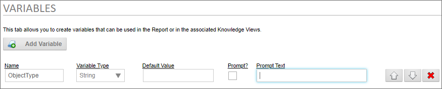
In the sections below, we'll come back to configure the Default Value, Prompt, and Prompt Text values, depending on our use case. Form now, though, our variable has been created, so we need to update the Report definition, then navigate to the Data Sources tab.
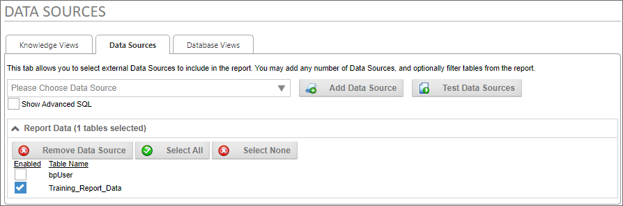
In this case, our datasource returns data from a table named Training_Report_Data. By default, it returns all data in that table, so we'll need to modify this data source to use our variable. To do so, we'll need to check the property labeled, Show Advanced SQL, to edit the SQL statement that returns the data from the table.
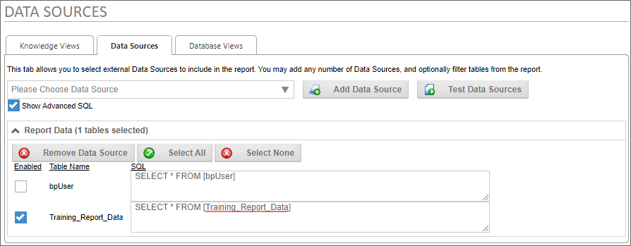
As you can see, this SQL statement returns all of the table data. We'll need to add a WHERE clause to this SQL statement to return the specific data that matches the value provided by the user.
WHERE [Object Type] LIKE '%{$VAR:ObjectType}%'
The Object Type field for each record will contain one of two values: "Form Instance" or "Timeline Instance".
Using the LIKE operator in our where clause, as well as the % wildcard character, will enable us to enter a filter value such as "form" to return Form instances, or "time" to return Timeline instances. If no value is provided for the variable, this syntax will return all records by default.
The {$VAR:ObjectType} system variable uses the $ encoding character to ensure that the value we pass to the database is SQL-safe, and identifies the ObjectType variable we created on the Variables tab as the source of the data to pass as a parameter to our SQL statement.
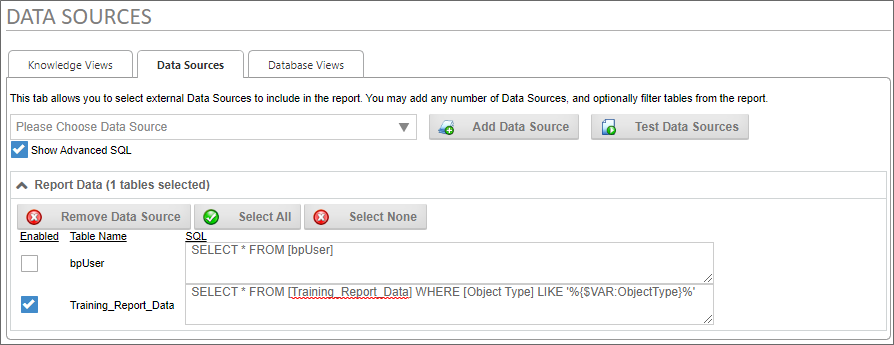
Once we've configured the Data Sources tab with the edited SQL statement, we'll need to update the Report definition again to save our changes.
Now, we'll need to return to the Variables tab to configure our ObjectType variable properly for the use cases below.
A report can prompt the user to provide a variable's value when the report runs. To make this work, we'll need to configure the ObjectType variable to prompt the user.
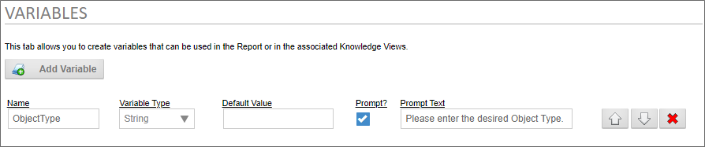
For this use case, we need to check the Prompt property to require the report to prompt the user for the value, then add the Prompt Text we want to use to provide instructions to the user. Once we've done so, we can update the report and run it.
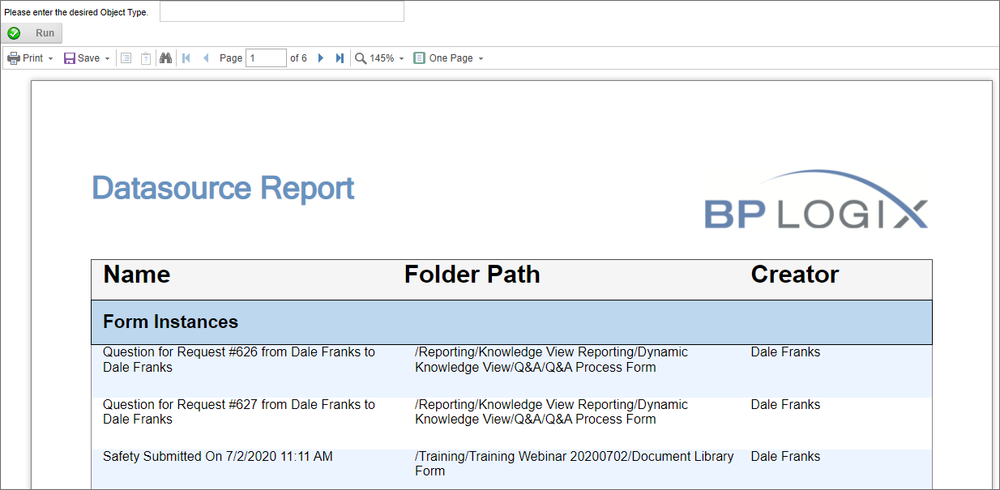
When the Report first opens, no value has been supplied for the ObjectType variable, so the report returns all objects, and is 6 pages long.
At the top of the report, the prompt we configured is displayed, along with a text box that enables us to enter the value we want to pass as a parameter. A Run button will, once we enter the desired value, run the report to return the data we specify. If we enter the value "time" in the text box, then click the Run button, we'll get the specific data that matches our parameter.
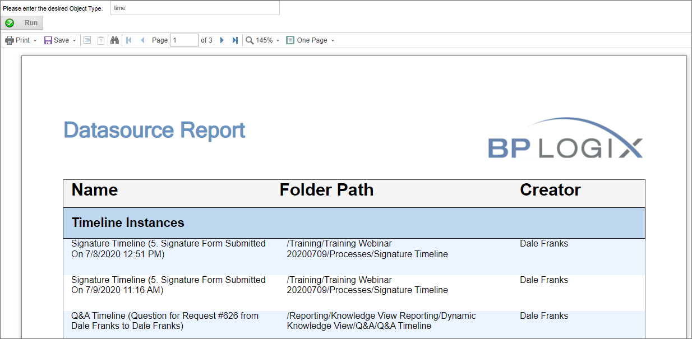
As we can see, the report is now only three pages long, and returns only Timeline instances.
If a report is displayed on a Form using the Show Report control, we'll need to configure the Form to provide the prompt from a Form control, rather than from the report itself.
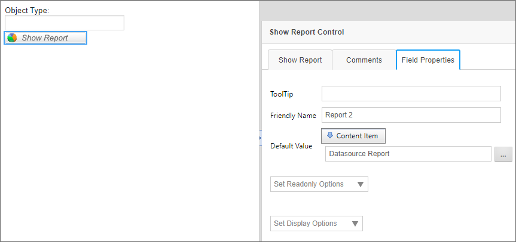
In this simple example, our form has two controls. An Input control named ObjectType, and a ShowReport control named Report2. The ObjectType field is configured as an Event Field, to prompt the report to reload any time we change the field's value. The Report2 field has the Default Value of its Field properties configured to show the Datasource Report definition from the Content Item selection.
Now, we have to set up the control properties for Report2 to pass the value of the ObjectType control to the Report.
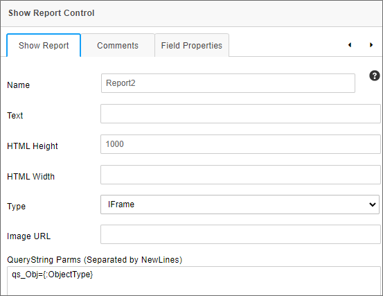
In the QueryString Parms property of the Report2 control, we'll create a query string to pass to the report, using the syntax:
qs_Obj={:ObjectType}
This syntax creates a QueryString named qs_Obj, with a value set to the value of the ObjectType control, via a Form field System Variable. With the QueryString set, we need to configure the Variables tab of the report definition to accept it. So, we'll save and close the Form, open the Report, and edit its Variables tab appropriately.
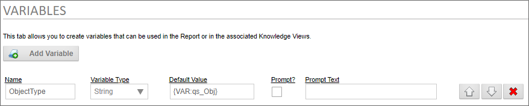
In this use case, we need to set the Default Value of the variable to use the the qs_Obj QueryString value that the Form will pass to the report. Since a QueryString is a variable, we'll use the VAR system variable to supply the default value, i.e., {VAR:qs_Obj}. We can now save and close our report, and run the Form.
When the Form first opens, it'll display the report showing all of the objects, but if we enter "time" into the ObjectType field on the form, the Report will, once again, show us only Timeline instances.
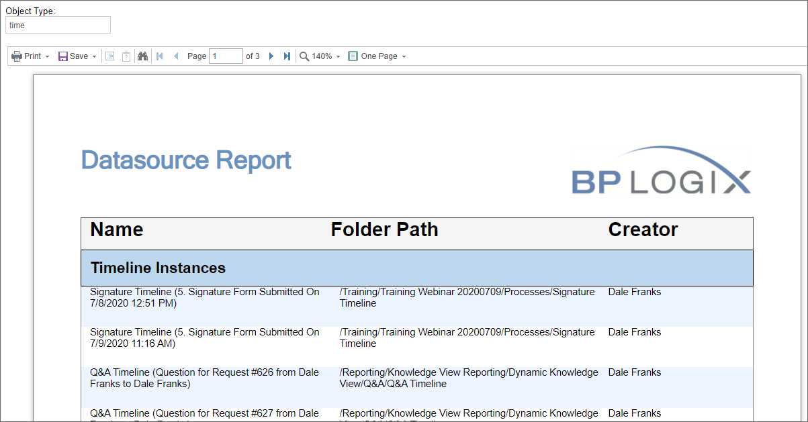